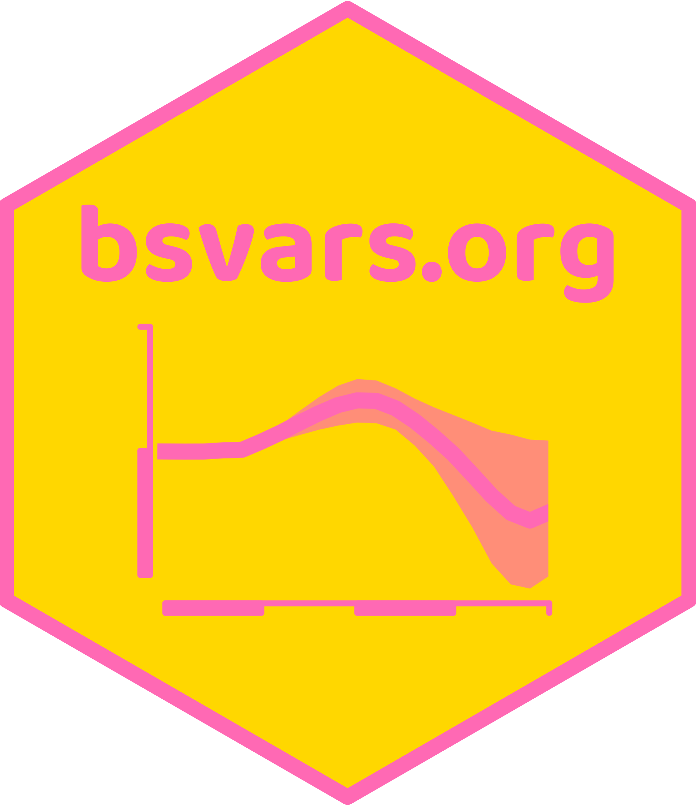
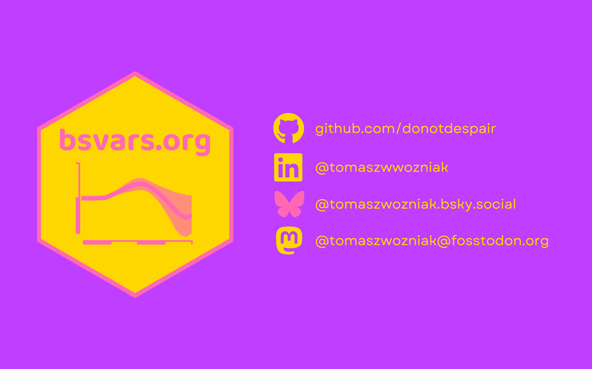

About me
- senior lecturer in econometrics at the unimelb
- econometrician: Bayesian time series analyst
- develops methods for applied macro research
- loves cycling, yoga, books, volunteering, contemporary theatre, music, and arts
- I am nice!
About me
- R enthusiast and specialised user for 17 years
- C++ coder since 2021
- associate editor of the R Journal
- author of R packages bsvars and bsvarSIGNs
 

Motivation
Motivation
- Compiled code written in C++ runs much faster than interpreted code in R
- Coding in C++ for R applications has always been possible
- It requires:
- writing C++ code
- compiling it, and
- linking it to R
- Difficulties:
- tedious object-oriented programming
- necessity of assuring object compatibility
- Benefits are great, but the cost was too high
Motivation
- Rcpp is a family of packages by Dirk Eddelbuetel et al. facilitating the application of C++ in R
- An interface for communication between R and C++
- Greatly simplifies the workflow
- Easier to benefit from the best of the two worlds:
- C++ programs are pre-compiled assuring fast computations
perfect for writing functions - R code is interpreted and dynamic:
perfect for data analysis
- C++ programs are pre-compiled assuring fast computations
Objectives for this session
- to facilitate working with C++ in R applications
- to perform a sequence of exercises
- to focus on:
- basic programming structures
- functional programming
- object types: scalars, vectors, matrices, lists, etc.
- linear algebra
- numerical optimisation
- random number generation
Materials for this session
- Lecture slides
- C++ scripts:
Learning resources
- This session!
- vignettes: for packages Rcpp and RcppArmadillo
- online resources:
- François, R., Optimizing R Code with Rcpp on datacamp
- Tsuda, M., Rcpp for everyone
- Eddelbuettel, D., Seamless R and C++ Integration with Rcpp
Preparation
- Follow the instructions from Section 1.3. by Eddelbuettel & François (2023)
\[ \]
- Install a C++ compiler:
- Windows: install RTools
- macOS: install Xcode Command Line Tools and gfortran
- Linux: install the standard development packages.
- Install the Rcpp and RcppArmadillo packages by running in R:
- Check if the installation is successful. Source the file
nicetry.cppin RStudio by executing:Rcpp::sourceCpp("nicetry.cpp"). If you see a matrix with values 1, 2, and 3 in R, you’re good to go for the workshop.
The first steps with Rcpp
The first steps with Rcpp
Consider the following C++ applications in R:
- Define a C++ function in an R script
- promptly available for fast computations
- Develop a C++ function in a
.cppfile- perfect for developing, testing, and benchmarking
- Use a function from a
*.cppfile in R computations - Use code across
*.cppfiles- perfect for elaborate projects
- Develop an R package using C++ code
- perfect for sharing your work with the community
Define a C++ function in an R script
Rcpp::cppFunction( # enables your C++ function in R
depends = "RcppArmadillo", # use RcppArmadillo
'DataFrame nicerw1 (int n) { // define the function and its argument
arma::vec rw(n, arma::fill::randn); // fill a vector with random draws
for (int i=1; i<n; i++) { // specify a loop
rw[i] += rw[i-1]; // update the vector elements
}
return DataFrame::create(_["rw"] = rw); // return a data frame with the vector
}'
)
plot.ts(nicerw1(100)) # use the function to generate and plot the random walkDevelop a C++ function in a nicerw.cpp file
A nicerw.cpp file sample contents:
#include <RcppArmadillo.h> // include RcppArmadillo header
// [[Rcpp::depends(RcppArmadillo)]] // include dependency
using namespace Rcpp; // declare namespace for Rcpp
using namespace arma; // declare namespace for Armadillo
// [[Rcpp::export]] // export the following function
vec nicerw1 ( // declare output class(vec) and function name
int n // declare function argument
) {
vec rw(n, fill::randn); // create amd fill a vector with random draws draws
for (int i=1; i<n; i++) { // specify a loop
rw[i] += rw[i-1]; // update the vector elements
}
return rw; // return the vector
}
/*** R
plot.ts(nicerw1(100)) # use the function to generate and plot the random walk
*/Develop a C++ function in a .cpp file
Your turn!
Copy/paste/modify the C++ function
nicerw1by the random walk using functioncumsum.Write an R function that generates a random walk using functions
rnormandcumsum.Benchmark the two functions using
microbenchmark::microbenchmark().
Use a function from a nicelr.cpp file in R
nicelr.cppfile contents:
- R script using the function from
nicelr.cpp:
Develop a C++ function in a .cpp file
Your turn!
- Extend the
nicelrfunction by computing the estimator of the error term variance to be computed as a real number classdouble:
\[
\hat\sigma^2 = \frac{1}{T} \left( Y - X\hat\beta \right)'\left( Y - X\hat\beta \right)
\] 2. Extend the output List to include a new element sigma2_hat.
Hint: use functions .t() and as_scalar().
Use code across .cpp files
- Use
nicerw.cppfile contents to generate a random walk and estimate an autoregressive model innicelr.cppfile.
STEP 1: Prepare the nicerw1.cpp file
STEP 2: Prepare the header nicerw1.h
Use code across .cpp files
STEP 3: Include the header nicerw1.h in the nicelr1.cpp file
#include <RcppArmadillo.h>
// [[Rcpp::depends(RcppArmadillo)]]
#include <nicerw1.h>
using namespace Rcpp;
using namespace arma;
// [[Rcpp::export]]
List nicelr (
vec y,
mat x
) {
vec beta_hat = solve(x.t() * x, x.t() * y);
double sigma2_hat = as_scalar( (y - x * beta_hat).t() * (y - x * beta_hat) ) / y.n_elem;
return List::create(
_["beta_hat"] = beta_hat,
_["sigma2_hat"] = sigma2_hat
);
}
/*** R
rw = nicerw1(100)
nicelr(as.matrix(rw[2:100]), as.matrix(rw[1:99]))
*/Some stats with RcppArmadillo
Some stats with RcppArmadillo
- Data objects from Rcpp have limited functionality
- Armadillo is a C++ library for linear algebra that
- provides a rich set of functions
- has a simple and intuitive syntax
- includes fast linear algebra routines, and
- fast random number generators
- has fantastic documentation
- RcppArmadillo is a simplified interface with Armadillo
- allows seamless integration with Rcpp
- easily passes data between R and C++
Some stats with RcppArmadillo: IG2 distribution
Sampling random draws from an inverted gamma 2 distribution.
A positive random variable \(\sigma^2\) following an inverted gamma 2 distribution with positive scale \(s\) and shape \(\nu\) parameters is denoted by: \[ \sigma^2 \sim IG2\left(s, \nu\right) \]
- Generate random draw \(x\) from \(\chi^2(\nu)\)
- Return \(\frac{s}{x}\)
Some stats with RcppArmadillo: IG2 distribution
Contents of a nicerig2.cpp file:
Develop a C++ function in a .cpp file
Your turn!
Consider a Gaussian random walk: \[ y_t = y_{t-1} + \varepsilon_t, \qquad \varepsilon_t \sim N(0,1), \qquad y_0 = 0 \] Develop a C++ function using RcppArmadillo that:
- has an integer
Tas the only argument - returns a
T-vector of typevecwith Gaussian random walk
Get some help HERE.
Some stats with RcppArmadillo: linear regression
Contents of a nicelr.cpp file:
Some stats with RcppArmadillo: linear regression
Your turn!
Extend the nicelr function to return the error term variance: \[
\hat\sigma^2 = \frac{1}{T} \left( Y - \hat\beta X \right)'\left( Y - \hat\beta X \right)
\]
- don’t adjust the arguments
- return
beta_hatandsigma2_hatin a list
Get some help HERE.
Hint: use functions as_scalar(), .t() and .n_elem.
Some stats with RcppArmadillo: limulation smoother
Additional resources!
Have a look at my article on Simulation Smoother using RcppArmadillo at Rcpp Gallery.
What’s next?
What’s next?
- Keep programming in C++ for R applications
- Revise solutions to our exercises:
- Reach out for help
- Read the documentation of the C++ libraries you’re about to use
- Study the Rcpp family of packages
- Study openMP to facilitate parallel computing
- Rewrite the R function that is the bottleneck in your code in C++
- Write an R package with C++ code using Rcpp and RcppArmadillo [15steps2nicepackage]
What’s next?
\[ \]
Rewrite all your code in Rcpp!
\[ \]
Nice!
